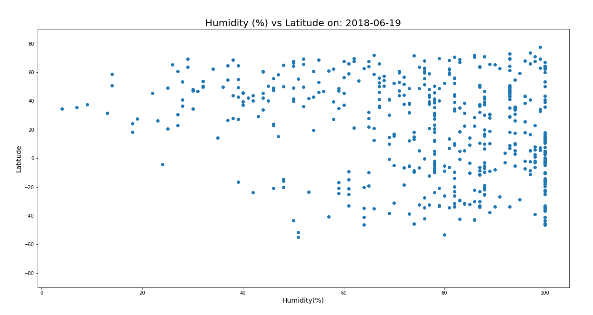
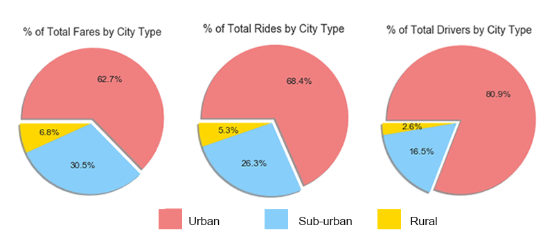

Background: Using information collected from the U.S. Census Bureau and the Behavioral Risk Factor Surveillance System, and D3.js I created a scatter plot comparing age to the number of smokers by state.
Process: Using javascript I added a scatter plot to an existing webpage. I then added the state abbreviations to each circle and a pop-up tool-tip when you hover over the circle that displays the state, number of smokers and average age.
Background: Create an interactive web-based javascript table that is dynamically loaded and filterable by user input and click of a button.
Process: I used javaScript to create a table dynamically from a provided dataset, about UFO-sightings. I mapped the dataset one cell at-a-time into a table on the HTML page. I then used javascript to listen for user input to apply a custom filter to the data, then remapped the dataset, creating a new table.
Background:This project involved scraping five different Mars-related websites utilizing BeautifulSoup, Selenium, requests and various API’s to scrape the needed data, then stored it into a new MongoDB database, and created a Flask app that would call the data into a HTML template displaying it all in one place. The site is rendered live and can be updated with the click of a button.
Process:I utilized BeautifulSoup to locate and save the most recent news article off of NASA’s news website and access the image from a background banner image as well as four additional hemisphere images. I utilized the Twitter Tweepy API to gather the latest tweet about Mars, and Pandas to pull in an html table of facts. I then built an HTML template using CSS and Bootstrap to display all of this data on one page. The final step was using Flask to build an app to allow the user to click a button on the website and have all the information updated.
Background:The purposed of this project was to analyze weather for a selected location during a specific time period. I completed this project by using Numpy, Pandas, MatPlotLib, and Seaborn for analysis, SQLAlchemy to connect to an SQLite database created from CSVs I cleaned, and Flask to generate a mini-API.!
Process:I used an ORM to map the data from my csv files into my sqlite database then created a session link to connect my python file to the database so I could run queries. I queried weather data for the last twelve months, primarily temperature and precipitation, then created functions to accept a start and end date (for an upcoming trip, for example) which returned the low, high and average temperature; and precipitation measurements for each weather station in the area for that time period, based off of the previous year’s data. All these queries were put into individual routes of a Flask-API, returning a JSON list of the results.
Background: Social media has exploded in popularity and knowing how to use it to your advantage is a skill worth perfecting. For this project I focused on just the Twitter accounts of five major news organizations and analyzed their latest tweets using VADER sentiment analysis to determine if the messages posted tended to be more positive or negative then plotted them using Matplotlib and Seaborn libraries.
Process: Using Twitter’s Tweepy API I pulled data from the most recent 100 tweets, saving the text, source, date and sentiment score into a Pandas DataFrame. Each Tweet’s sentiment value was plotted on a -1 to 1 scale with 0 being neutral (shown above). I then created a bar chart illustrating the overall sentiment for each news source.
Conclusions: It was surprising how many tweets scored a neutral (0) value. I ran this code several times on different days and the overall sentiment values for each news source changed based on current events being reported. This graph illustrated here pulled tweets from a day or two after a bombing and sentiment values tended towards the negative values. All the news sources had a variety of positive and negative valued tweets. This data would need to be researched over a longer period of time to be able to provide fair conclusions about the news sources.
Background: The objective of this project was to analyze the effect of latitude on the following weather variables: temperature, humidity, cloudiness, and wind speed. I used the Open Weather API and CitiPy for gathering the data and Python’s Pandas and Numpy for analyzing it, and Plotly for the visualizations.
Process: I used 500 locations at generated at random through Numpy (creating random values for latitude and longitude then zipped them together). Using the latitude and longitude values I pinpointed the closest city using CitiPy then used the Open Weather API to pull the weather data for those cities storing in a Pandas data frame. From there I created scatter plots to analyze the correlation between latitude and the weather variables. Humidity vs. latitude is shown below.
Conclusions: As expected there was a strong correlation between latitude and the temperature. Locations closer to the equator had higher temperatures. The same correlations could not be said about the other weather variables. In fact, no other noticeable relationships could be identified among the other weather variables with the amount of data I was working with.
Background: This project was analysis of a fictitious ride-sharing company, cleverly named “Pyber”. I used Pandas and Numpy to analyze the data in Jupyter notebook and Matplotlib and Seaborn libraries to create visualizations to illustrate my findings.
Process: Data was provided as a csv file that I read into a Pandas data frame for easier evaluating and from there I sorted and grouped and ran basic math functions to determine the number of rides, number of drivers and average fare for each type of city (urban, rural, city). From that data I create a bubble chart comparing the number of rides to the average fare price and number of drivers in each type of city as well as pie charts illustrating each of the previous variables individually by city type.
Conclusions: Pyber was a good example of how supply and demand effect price. Fare prices were higher where there were fewer rides requested and fewer drivers available. Fares tended to be higher in rural areas, potentially because of longer rides, however this is just speculation.
Background: Heroes of Pymoli was the study of a fictitious free-to-play video game, in which players are encouraged to purchase optional items to enhance their playing experience. From the data provided I was able to determine what the most popular items sold were and what type of player was responsible for the majority of sales.
Process: I started by reading a JSON file into a Pandas data frame to get a feel for what data I had to work with. The first step to figure out the size of the dataset and run counts to determine how many unique products and customers were represented. From there I broke the data down by gender and age groups to begin to form a profile of customers. A few of my calculations included the average amount spent by gender, the top overall individual spenders, average transaction total and most profitable item for sale.
Conclusions: As expected males ages 15-29 were the most represented ages and also the highest spenders. However, those over age 40 had more expensive purchases, spending an average of $4.89, while the 15-29-year-olds spent closer to an average of $3.80. The video company did not seem to have any single product that was a revenue driver for them, as the most popular item only sold 11 times, in a total of 780 purchases.